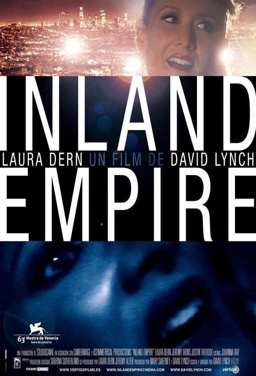

Inland Empire (2006)
Sinopsis Rápida
Una actriz asume un papel que la lleva a un mundo de pesadilla donde la realidad se desdibuja y las líneas entre ficción y vida se desvanecen en una espiral de misterio y locura.
Sinopsis Detallada
Inland Empire sigue a Nikki, una actriz que comienza a filmar una película que poco a poco se convierte en una inquietante y desconcertante reflexión sobre la identidad, la realidad y la naturaleza del cine mismo. La película se adentra en un laberíntico y perturbador viaje psicológico, repleto de simbolismo enigmático, imágenes impactantes y una atmósfera profundamente opresiva que mantiene al espectador en constante suspenso. La trama se entrelaza con elementos de misterio, terror y paranoia, dejando al público con una sensación de inquietud y una búsqueda de interpretaciones.
¿Por qué tenés que verla?
- Una experiencia cinematográfica única e inolvidable que te dejará pensando mucho tiempo después de verla.
- La maestría de David Lynch en la dirección y la creación de una atmósfera inquietante y cautivadora.
- Su influencia en el cine independiente y su estatus de obra de culto entre cinéfilos.
- Un estudio profundo sobre la identidad y la fragilidad de la realidad.
Idea Extra
Análisis del simbolismo y las múltiples interpretaciones de Inland Empire, explorando las teorías de los fans y la intención del director.
{{CONTENIDO_RELACIONADO}}